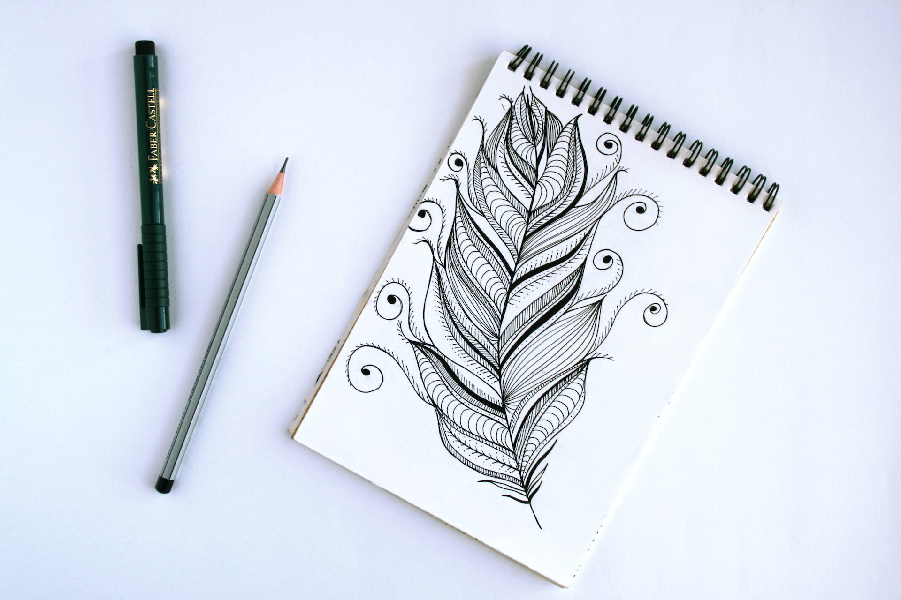

พื้นฐานการวาดเส้น
การวาดเส้นเป็นทักษะพื้นฐานที่สำคัญในการเรียนรู้ศิลปะและดีไซน์ นอกจากนี้ยังมีการใช้เส้นในงานอื่น ๆ เช่น การวาดแผนที่ การออกแบบสินค้า และการสร้างกราฟิก ดังนั้น การรู้เรื่องพื้นฐานของการวาดเส้นจึงเป็นสิ่งสำคัญ ดังนี้คือบางเรื่องที่ควรรู้
- ปากกาหรือดินสอ: เลือกปากกาหรือดินสอที่เหมาะสมกับพื้นผิวที่คุณจะวาด เช่น ปากกาที่มีความเข้มข้นต่างกันสำหรับเส้นหนาและบาง หรือดินสอที่มีปลายที่แม่นยำสำหรับการวาดเส้นละเอียด
- กระดาษ: เลือกกระดาษที่มีคุณภาพเพื่อให้สามารถสร้างงานศิลปะที่ดีได้ กระดาษที่มีน้ำหนักเบาเหมาะสำหรับการฝึกการวาด ส่วนกระดาษที่มีน้ำหนักหนามักนิยมสำหรับงานศิลปะที่ใช้เทคนิคเพ้นท์
- เส้นนำ: เส้นนำหรือไม้บรรทัดช่วยให้คุณวาดเส้นตรงได้แม่นยำมากขึ้น มันเป็นเครื่องมือที่มีประโยชน์ในการสร้างการสมมติฐานและสอดคล้องกับพื้นที่ที่คุณกำลังวาด
- การศึกษาและฝึกฝน: ศึกษาเทคนิคและการใช้เครื่องมือเพื่อวาดเส้นอย่างถูกต้อง มีความสำคัญที่จะฝึกฝนเพื่อเรียนรู้วิธีการควบคุมความแม่นยำและความเร็วของเส้น
- การเรียนรู้เกี่ยวกับแบบแผนที่: การทราบเรื่องพื้นฐานของการสร้างแผนที่และการวาดเส้นทางจะช่วยให้คุณเข้าใจวิธีการสร้างเส้นทางหรือโครงสร้างในงานศิลปะและดีไซน์
- การใช้เทคโนโลยี: การใช้โปรแกรมคอมพิวเตอร์เพื่อวาดเส้นอาจเป็นทักษะที่สำคัญในสมัยนี้ ความคุ้นเคยกับโปรแกรมการสร้างภาพและการใช้เครื่องมือทางดิจิทัลเป็นสิ่งที่มีประโยชน์
